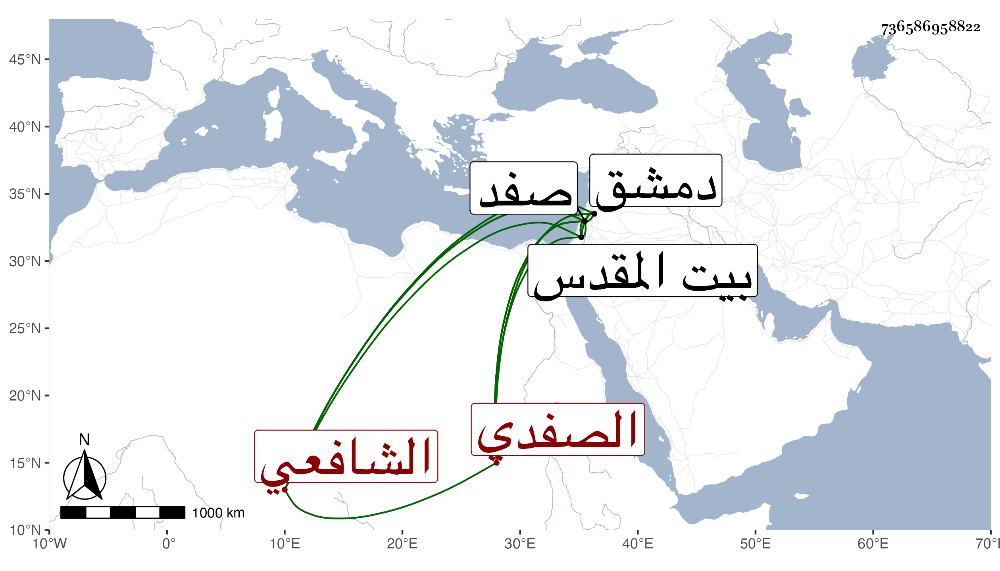

0902Sakhawi.DawLamic.ITO20230111-ara1.EIS1600.736586958822
Biography ID: 736586958822
739
محمد بن عيسى بن إبرهيم بن حامد بن خليفة الشمس بن الشرف الصفدي الشافعي ابن عم العلاء علي بن محمد بن إبرهيم ويعرف كهو بابن حامد . ولد في سنة ثمان وثمانمائة بصفد ونشأ بها فقرأ القرآن والمنهاجين الفرعي والأصلي وألفية ابن ملك والتقريب للنووي في علوم الحديث وغيرها وتفقه في بلده بالعلاء النيني وبدمشق بالعلامة ناصر الدين بن بهادر ولازمه في فنون وكذا أخذ العربية عن العلاء القابوني والفقه والحديث والتصوف وغيرها عن الشهاب بن رسلان وقرأ على شيخنا الصحيح في مدة قليلة ولازمه في علم الحديث وقرأ على أبي الفضل المغربي حين قدم عليهم صفد الموجز في الطب وقطعة من العضد . وتميز في العلم سيما العربية والطب والميقات علما ووضعا مع فصاحة وسمت وبلاغة ، وتصدى للإفتاء والتدريس ببلده وقرأ البخاري بجامع بلده الطاهري الأحمر على العامة وانتفع به جماعة بل كتب على المنهاج والبهجة وجامع المختصرات أشياء لم تكمل ولكنه كان داعية لابن عربي مناضلا عنه قائما بتقرير كلامه وتوجيه طاماته حتى في مواعظه على الكراسي بدمشق وغيرها ، وقد حج غير مرة آخرها في سنة ثمانين وجاور وزار بيت المقدس . ولم يزل على طريقته حتى مات بمدرسة أرقطاي محل سكنه من صفد في شوال سنة سبع وثمانين ودفن بالمدرسة المذكورة عفا الله عنه . وممن انتفع به صهره الزين عبد اللطيف بن محمد بن محمد بن يعقوب واستفدت منه حين قراءته على أكثر ترجمته .
